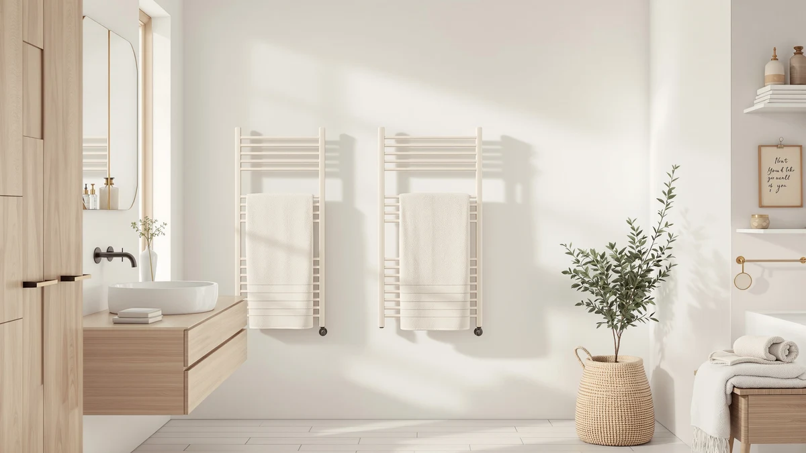

Best Electric vs Hydronic Towel Warmers (2026) | Best Towel Warmers
Prices and picks verified as of August 2026. Independent, reader-supported reviews.


Things to Know Before You Buy
- Plug-in electric units install in minutes, while hardwired electric racks and hydronic units need an electrician or a plumber.
- Hydronic warmers run on the heat you already pay for, so they add little to your bill. Electric units draw their own power, usually 40 to 150 watts.
- Hydronic systems hold heat longer and warm the room as a bonus. Electric units heat up faster from cold, often in 10 to 15 minutes.
- Most models you can buy and install on Amazon are electric. True hydronic warmers cost more up front and almost always need professional installation.
- Renters and quick upgrades favor electric. Whole-bathroom renovations favor hydronic.
The choice between electric vs hydronic towel warmers comes down to how your bathroom is plumbed, how much you want to spend, and how often you want warm towels waiting for you. Both types do the same basic job, drying and heating your towels, but they get there in very different ways. Electric units plug in or wire into your existing circuit, while hydronic units tap into your home's hot water or heating loop.
If you rent, or you want a unit running this weekend, an electric model is the practical pick. If you are mid-renovation and already have a boiler or radiant heating loop, a hydronic warmer can fold into that system and cost almost nothing extra to run. Below, we compare how the two stack up on build, price, and running cost, then match each to the bathroom you actually have.
Quick Answer
For most bathrooms, an electric towel warmer costs less and installs faster, which is why our top pick is the plug-in AAOBOSI. Go hydronic instead if you are already renovating around a boiler or radiant heat loop and want a unit that warms the whole room. Neither type wins outright. The right one depends on your plumbing and your budget.
What is Electric?
An electric towel warmer heats its bars or its interior chamber with an internal heating element. It is the type you see most on Amazon, and it splits into two shapes. Wall-mounted racks heat a set of bars that your towels drape over, while bucket-style units, like the AAOBOSI and VERYTOP models, hold towels inside an insulated drum and warm them from all sides.
Plug-in electric models need nothing more than a nearby outlet, so you can hang or set one up in an afternoon. Hardwired electric racks connect directly to your bathroom circuit for a cleaner look with no visible cord, but they need an electrician. Power draw stays low, usually between 40 and 150 watts, roughly the same as a couple of light bulbs.
You control most electric units with a simple switch or a timer, and many include auto-shutoff after a set number of hours. The trade-off is that the heat lives in the unit alone. An electric warmer dries and heats your towels, but it does little to warm the room around it.
What is Hydronic?
A hydronic towel warmer heats its bars by circulating hot water through them, drawing on your home's boiler, water heater, or a radiant heating loop. This is the option built into the plumbing rather than plugged into the wall. The same hot water that feeds your radiators or your taps flows through the warmer's rails and keeps them warm.
Because a hydronic unit ties into a larger heat source, it can run almost continuously during the heating season without adding a separate line on your power bill. The bars hold heat well and radiate enough warmth to take the chill off a small bathroom, not just the towels on the rack.
Installation is the catch. A plumber has to connect the unit to your water or heating lines, and that work makes the most sense during a renovation or new build. You will not find many true hydronic models sold as simple Amazon add-ons. Most listings labeled for home use, including the picks below, are electric. A hydronic warmer makes sense when you can plan it into a build that already has the plumbing to support it.
Head-to-Head: Build Quality & Durability
Build quality splits along type lines. Hydronic warmers carry fewer electronic parts, since the heat comes from water moving through the rails rather than an element inside the unit. With no circuit board or thermostat to fail, a well-installed hydronic rack can last for decades, and its main risk is a slow leak at a fitting rather than a burned-out component.
Electric units pack more into a smaller package. A bucket model like the AAOBOSI or the VERYTOP houses a heating element, a timer, and insulation inside a stainless or coated drum. Wall racks like the LDVROH and WEILAILANTIAN run heat through hollow steel bars. Stainless steel construction resists the constant humidity of a bathroom, which is why most of the picks below use it.
The weak point on electric warmers is the electronics. Timers, switches, and elements wear out faster than plumbing, and a failed element usually means replacing the unit rather than repairing it. You trade the longer lifespan of a hydronic system for the lower price and easier replacement of an electric one. For renters, being able to swap the whole unit cheaply is exactly what you want.
Head-to-Head: Price & Value
Price is where electric towel warmers pull ahead. The electric models below run from about $37 for the WEILAILANTIAN rack to $180 for the Aquatrend, and most plug-in units land under $100. You pay once, plug in, and the running cost stays small, often a few dollars a month at 40 to 150 watts.
Hydronic warmers cost more before they ever heat a towel. The unit itself is comparable in price, but professional plumbing installation can add several hundred dollars, and that assumes your home already has accessible hot water or heating lines. Where a hydronic unit claws back value is the running cost, since it piggybacks on heat you are already paying for and adds almost nothing to your bill during the heating season. Over many years in a home you own, that can offset the install. For most buyers, electric wins on day one.
Head-to-Head: Use Experience
Day to day, the two types feel different the moment you reach for a towel. Electric warmers heat up fast from cold. A bucket unit like the AAOBOSI or VERYTOP can have a towel warm in 10 to 15 minutes, and the timer means you set it before a shower and forget it. That speed suits households where the warmer sits off most of the day and clicks on for one or two showers.
Hydronic warmers work best when they stay on. They take longer to come up to temperature, but once the loop is warm, the bars hold heat steadily and warm the room as a bonus. You get steady, gentle warmth rather than an on-demand burst.
Capacity is the other split. Bucket-style electric units swallow large bath towels and even robes inside the drum, which racks and most hydronic models cannot match. Racks, electric or hydronic, give you more bars to spread several towels at once but heat them less aggressively. Match the format to your routine: a bucket for deep, fast heat on a couple of towels, a rack for spreading out a family's worth.
When to Choose Electric
Choose an electric towel warmer if you rent, if you want warm towels this week, or if you would rather not call a contractor. Electric is the low-commitment path. A plug-in bucket or rack needs only an outlet, and you can take it with you when you move.
Electric also makes sense when the warmer serves one or two people on a predictable schedule. The fast heat-up and built-in timer mean you are not paying to keep water hot all day for two showers. If you want the deepest, fastest heat on a couple of towels, a bucket unit like the AAOBOSI delivers that better than any rack. And if budget is the deciding factor, electric wins outright, with capable models well under $100 and almost no installation cost beyond plugging it in.
When to Choose Hydronic
Choose a hydronic towel warmer when you own your home, you are renovating the bathroom, and you already have a boiler or radiant heating system to tap. Hydronic is the long-game pick. The higher install cost pays off over years of low running cost, especially in colder climates where the heating loop runs for months.
Hydronic also wins when you want the warmer to heat the room, not just the towels. The bars radiate steady warmth that takes the chill off a small bathroom on a winter morning. If you value a clean look with no cord or timer to fuss with, a hardwired hydronic rack disappears into the wall. Just plan it into the renovation from the start, because retrofitting plumbing after the fact is where the cost and hassle pile up.
Our Top Picks
Almost every towel warmer you can buy and install yourself is electric, so the picks below are electric models we would recommend across three budgets. If you are set on hydronic, treat these as the benchmark to beat once you factor in installation.

Editor’s Pick
AAOBOSI Large Towel Warmers for
A plug-in bucket warmer that heats large towels from all sides in about 15 minutes, with a timer and auto-shutoff. The best balance of price, speed, and capacity for most bathrooms.
$49.45
Check Price on Amazon
Best Value
VERYTOP 23L Hot Towel Warmer
A roomy 23-liter bucket that fits oversized bath towels and a robe, with the same fast electric heat. Worth the step up if your towels are big or you warm two at once.
$99.99
Check Price on Amazon
Premium Choice
Aquatrend Towel Warmers for Bathroom
A wall-mounted electric rack that spreads several towels across heated bars and looks built-in. The closest electric stand-in for the clean look of a hardwired hydronic unit.
$179.99
Check Price on AmazonWhich is cheaper to run, electric or hydronic towel warmers?
Hydronic warmers are usually cheaper to run because they use heat from your existing boiler or water heater.
Can I install a towel warmer myself?
Plug-in electric towel warmers install in minutes with just an outlet.
Frequently Asked Questions
Which is cheaper to run, electric or hydronic towel warmers?
Hydronic warmers are usually cheaper to run because they use heat from your existing boiler or water heater. Electric units draw their own power, but at 40 to 150 watts the cost is still small, often a few dollars a month. The bigger gap is upfront: electric costs little to install, while hydronic needs a plumber.
Can I install a towel warmer myself?
Plug-in electric towel warmers install in minutes with just an outlet. Hardwired electric racks need an electrician, and hydronic units need a plumber to connect them to your water or heating lines. If you want a do-it-yourself job, choose a plug-in electric model.
How long does a towel warmer take to heat a towel?
Electric bucket units warm a towel in about 10 to 15 minutes from cold, and electric racks take a similar time per towel. Hydronic warmers heat more slowly but hold the temperature longer once the heating loop is up to temperature, so they suit homes that leave them on.
Do towel warmers use a lot of electricity?
Most electric towel warmers draw 40 to 150 watts, similar to a couple of light bulbs, so they add only a few dollars a month even with daily use. A built-in timer and auto-shutoff keep that cost down further. Hydronic units use little extra electricity since the heat comes from your home's existing system.
Are towel warmers safe to leave on?
Most electric models include auto-shutoff after a set number of hours, which makes them safe to run before a shower and forget. For longer or unattended use, a timer is the safer choice. Hydronic units run at lower surface temperatures and are designed to stay on through the heating season.
Final Verdict
There is no single winner here, only the right fit for your home. Electric wins on price and easy install, which makes the plug-in AAOBOSI our top pick for most bathrooms and the simplest way to get warm towels this week. Hydronic earns its place in homes already built around a boiler or radiant heat, where low running cost and whole-room warmth pay off over years. Match the type to your plumbing and your budget, and either one will end cold towels for good.